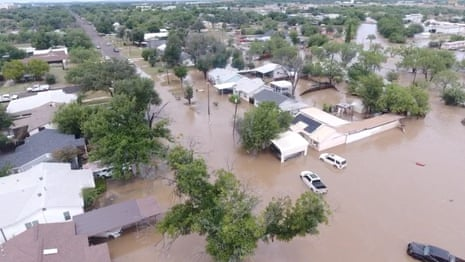

The ongoing challenges of forecasting extreme weather during the era of the climate crisis have been brought to the fore again amid catastrophic flash flooding in the “hill country” region of Texas .
As of early Sunday, hundreds of rescuers are searching for at least 12 people still missing as rains taper off outside of San Antonio and Austin. Hundreds of people have already been pulled from floodwaters that have killed nearly 70 people so far, many of them children at a summer camp along the banks of the Guadalupe River.
July is peak flash flood season in the US, and central Texas is known as “flash flood alley” because the necessary ingredients of tropical moisture and slow-moving storms come together often over hilly terrain there. National Weather Service (NWS) forecasters caution that more floods could come this weekend and into next week.
The scale of this latest climate disaster became apparent on Saturday as drone footage taken on Saturday morning showed entire neighborhoods inundated and rushing waters streaming through small town streets. Tales of survival and heartbreak were plentiful.
Drone footage shows extent of deadly Texas flooding – video
An initial analysis of the downpours and the decisions by forecasters that led up to them by the Guardian shows that rainfall of this magnitude was exceedingly rare and difficult to predict, even for this flood-prone region.
Friday’s totals of more than 10in (25cm) of rain in three hours could be expected just once in a “typical” 500-year period for Kerrville, Texas – three months’ worth of rain in just a few hours. Radar data show that more than 4in per hour fell during the peak of Friday’s rains. That rainfall intensity was in excess of a similar flash flood in 1987 that also ended in tragedy for campers along the Guadalupe.
Saturday’s rainfall totals actually exceeded Friday’s rainfall for a region slightly north of Friday’s peak rains. Nearly 14in of rain fell in five hours just west of Austin, Texas – rains that would be expected just once in nearly 1,000 years given a stable climate.
Despite funding cuts and widespread staffing shortages implemented by the Trump administration , NWS forecasters in both the local San Angelo office and at the NWS national specialty center responsible for excessive rainfall provided a series of watches and warnings in the days and hours leading up to Friday’s flooding disaster.
The forecast office in San Angelo has two current vacancies – typical for the pre-Trump era and fewer than the current average staff shortage across the NWS – and has not been experiencing any lapses in weather balloon data collection that have plagued some other offices.
In fact, weather balloon data gathered on Thursday from Del Rio showed record amounts of moisture present in the upper atmosphere above central Texas and added to the confidence that severe flash flooding was possible. The Del Rio office then began issuing a series of flood watches starting on Thursday afternoon that cautioned the region to prepare for “excessive runoff” from “5 to 7 inches of rain”.
The NWS’s Weather Prediction Center, based in College Park, Maryland, also issued a series of mesoscale precipitation discussions on Thursday – highly detailed advance notices to other weather forecasters that a particularly rare event might be underway. In one of the discussions, forecasters noted that moisture content in central Texas was “above the 99th climatological percentile” – far in excess of normal and a clue that historic flooding was possible.
In a final escalation, the NWS office in San Angelo issued a flash flood emergency about an hour before the water started rapidly rising beyond flood stage at the closest US Geological Survey river monitoring gauge . A flash flood emergency is the highest level of flood warning available to the NWS, and sufficient to set off the Wireless Emergency Alert system , which would have triggered cellphone alarms in the region.
The National Weather Service issued dozens of additional flash flood warnings throughout the day on Friday and Saturday after the second wave of extremely heavy rains compounded the flooding’s scope across central Texas during the early morning hours.
Even though watches and warnings were issued on time throughout the disaster – contrasting what local officials have said in press conferences – rainfall totals specified in the first flash flood watch were about half of what ultimately fell.
Current weather forecasting technology is capable of knowing that near-record rainfall may occur somewhere in a given region about a day in advance, but knowing exactly how much and in which part of a specific river’s drainage basin over hilly terrain makes flood forecasting much more difficult – analogous to prediction exactly which neighborhood a tornado might strike a day ahead of time. Donald Trump’s staffing cuts have particularly hit the National Oceanic and Atmospheric Administration’s Environmental Modeling Center , which aims to improve the skill of these types of difficult forecasts .
Though it’s unclear to what extent staffing shortages across the NWS complicated the advance notice that local officials had of an impending flooding disaster, it’s clear that this was a complex, compound tragedy of a type that climate warming is making more frequent.
Rainfall intensity in central Texas has been trending upward for decades, and this week’s rains were enhanced by the remnants of Tropical Storm Barry, which made landfall in northern Mexico last week. Barry’s circulation pulled record amounts of atmospheric moisture up to central Texas from the near-record warm waters of the Gulf of Mexico.
The mix of Barry’s circulation and climate warming helped create conditions of record-high atmospheric moisture content over central Texas – in line with the trend towards increasing atmospheric moisture content globally as the world warms and the air can hold more water vapor.